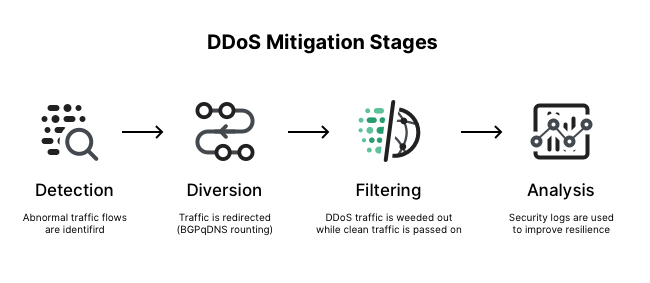
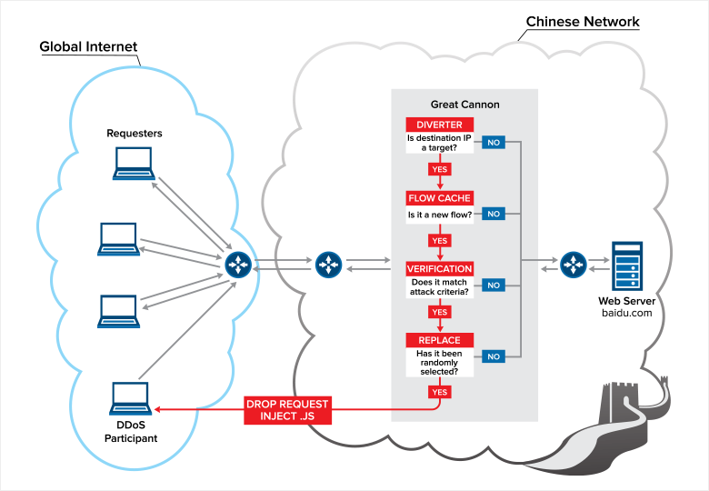

"La rebelión de las máquinas" y ataques DDoS
Cómo hicieron colapsar Amazon usando DVRs (grabadoras) y heladeras, 5 de noviembre 2020
La denegación de servicio es cuando no se puede acceder a una página, generalmente porque está fuera de servicio o simplemente muy ralentizada. Esto pasa de manera natural cada vez que un servidor recibe más peticiones de las que puede manejar al mismo tiempo, como es el ejemplo de la página de la UBA cada vez que se intenta rendir un examen virtual (algunos sabrán de lo que hablo). Un ataque de denegación de servicio distribuido por el otro lado (DDoS por sus siglas en inglés), es cuando la sobrecarga del servidor es llevada a cabo de manera intencional. Un ejemplo sería mandar miles o millones de peticiones a un servidor hasta que exceda su capacidad y no pueda lidiar con la totalidad.
Otro ejemplo, esta vez llevado más a la vida real, es el de uno de mis entrevistados, el cual por razones obvias decidió permanecer anónimo. Se trata de un experto en ciberseguridad al que le pregunté si alguna vez consideró cruzar la línea de la ética y pasarse al otro lado, ya que a medida que iba teniendo más entrevistas, notaba una tendencia general en la gente que se destacaba por un interés en las técnicas de ataque. Y si bien para estudiar ciberseguridad uno debe saber cómo atacan los demás, también es fácil verse tentado. En el caso particular del entrevistado, me mencionó haber llevado a cabo un DDoS ya hace años cuando todavía estaba en el colegio.
Como me contó, resulta que un día en el colegio él no tenía ganas de estudiar, por lo que se decidió por tirar abajo la red del colegio mediante un DDoS. No es una tarea fácil por supuesto, teniendo en cuenta el tamaño de la red (arriba de 200 ordenadores), pero siendo honestos, las botnets son increíblemente fáciles de adquirir. Hoy en día todo lo que necesita uno para lanzar un DDoS no es más que el conocimiento y el poder para llevarlo a cabo. En ese entonces podemos estar seguros de que el conocimiento para lanzar el ataque lo tenía, y como dije antes, las botnets están al alcance de la mano, disponibles en la deep web.
Al día de hoy esta persona trabaja en ciberseguridad y es de los mejores en lo que hace. Y esto concuerda con el testamente de Santiago Barclay, otro de los entrevistados quien dice que, en el rubro de la ciberseguridad, todos aquellos que son considerados expertos alguna vez estuvieron del otro lado de la ley. Y respecto al que permanecerá anónimo, confesó haber realizado cosas mucho peores que dejar a todo su colegio sin internet, pero son cosas que prefiere callar.
Esta botnet de la que hablé y aparece en la imagen es una red de miles de ordenadores distintos utilizados para enviar suficientes peticiones a un servidor como para sobrecargarlo, incluso a los más importantes como los de Spotify o Amazon. Estos ordenadores que pertenecen a la botnet, reciben el nombre de bots y suelen ser en realidad dispositivos de cualquier persona inocente, pero que fueron infectados con malware para que actúen según les indique el atacante. Llegado este punto muchos de ustedes se deben estar preguntando ¿qué tienen que ver las heladeras con todo esto? Y resulta que más de lo que creen, pero para eso habría que mencionar primero la “Internet de las Cosas” (IoT por sus siglas en inglés).
La internet de las cosas es el nombre que se le da a la interconectividad de los dispositivos, cuando la conexión deja de ser entre un usuario y un servidor para pasar a ser entre una computadora y una impresora, o el termostato y el celular, el humano desaparece de la ecuación. Esta interconectividad donde cada vez más dispositivos acceden a internet, si bien fascina a los aficionados a la tecnología, también asusta a los expertos en la misma. Se debe tener en cuenta que la internet es una red de comunicación, y si tu termostato tiene acceso a internet, el internet puede tener acceso a tu termostato. Obviamente, esto suena como una exageración, y en el caso del termostato puede serlo. Pero si un atacante puede ingresar a tu computadora la cual tiene décadas de esfuerzo en ciberseguridad integrada, ¿le sería realmente difícil ingresar a tu Smart TV?
La verdad es que tanto las Smart TVs como las impresoras o celulares pueden ser hackeados. Hasta las impresoras 3D fueron hackeadas en el pasado, otorgando acceso a la cámara integrada que algunas poseen. Hoy en día si un dispositivo está conectado a internet, es muy difícil determinar con 100% de certeza si es impenetrable, y de evidencia está cada dispositivo que dijo tener seguridad inquebrantable en el pasado, y falló ante la realidad. Y para los que creen que un hackeo a su heladera inteligente no es más que una molestia y no presenta ningún peligro, deberían tener en cuenta que sí presenta un peligro para los demás, como explica Cnet.com, el artículo de Financial Times “When Fridges Attack” y el de TechTimes, “Massive Dyn DDOS Attack: Experts Blame Smart Fridges, DVRs And Other IoT Devices Why Your Internet Went Down”.

Para los curiosos, pero no tanto como para leer los links: 100 000 dispositivos como heladeras, grabadoras, Smart TV e impresoras fueron infiltrados para formar una botnet que fue usada para un DDoS, llevando a la caída de Twitter, Reddit, Etsy, Spotify, Netflix y GitHub, Tumblr, Soundcloud, Shopify, Airbnb, PayPal y Yelp, para nombrar algunas. En otras palabras, la falta de seguridad en estos dispositivos que parecen inofensivos, causó la caída de todos estos sitios en tan solo unos minutos en octubre de 2016. Lo que es más importante, la mayoría de estos dispositivos no presentaron fallas de seguridad importantes, sino que los propietarios fallaron en configurarlos como deberían. Este es el caso de las grabadoras de video utilizadas en el ataque. Estas grabadoras son las que recopilan el video de las cámaras de seguridad y lo guardan al menos durante unos días en caso de necesitarlo. El error de los dueños estuvo en no establecer una contraseña para estas grabadoras, sino usar la predeterminada de fábrica; una contraseña fácil de descubrir y que otorgaba el acceso a miles de dispositivos, así haciendo posible el ataque DDoS sin precedentes (el más grande de la historia hasta 2018).
Para otorgar algo de contexto, los ataques DDoS suelen estar dirigidos a sitios web como Amazon o Twitter, pero la particularidad de este es que en vez de dirigirse a un sitio se dirigió a DynDNS, la empresa de DNS más grande de Estados Unidos. Esta empresa también ofrecía el servicio de hosting a estas empresas, llevando a que la inoperancia de los servidores de Dyn cause la inoperancia de los sitios web que dependían de sus servidores.

¿Cómo defenderse ante un DDoS?
La verdad es que uno como usuario nunca recibiría un ataque DDoS, podría ver ocurrir alguno, pero no hay nada que pueda hacer al respecto. Sin embargo, lo que uno sí puede hacer es proteger sus dispositivos, todos ellos, incluidas las cámaras y la heladera, para que nunca formen parte de un ataque contra terceros. Esto es realmente importante ahora que el código maligno que se empleó para llevar a cabo el ataque está al acceso de todo el mundo en internet, y cualquiera que quiera emplear un ataque similar, si tiene la mano de obra necesaria, puede hacerlo.
Además, si tienen curiosidad sobre cómo las empresas combaten los ataques de tipo DDoS entonces pueden ver la página de Imperva, una empresa que ofrece este servicio. En pocas palabras, ante la presencia de un DDoS automáticamente se redirige el tráfico a la nube (donde hay otros servidores con mayor capacidad). Una vez en la nube los servidores externos analizan los pedidos, filtrando los malignos y finalmente se redirigiendo los benignos que son en realidad paquetes de usuarios reales, al servidor interno del sitio. De esta manera una empresa puede continuar funcionando y estando abierta al público sin verse afectada por un DDoS, como pasó con GitHub durante el Gran Cañón Chino.

El Gran Cañón Chino
”El Gran Cañón Chino” es el nombre que recibe el ataque DDoS más grande que sufrió GitHub en su historia. Este ataque comenzó en realidad en la página GreatFire.org, fuertes opositores a la censura china del internet, como lo declara su lema: We monitor and challenge internet censorship in China. Para los que no están al tanto, el gobierno chino limita los sitios web a los que pueden acceder los chinos como por ejemplo Google, YouTube, Netflix, Instagram y muchos más. GreatFire.org combate esta censura, creando maneras para que los ciudadanos de China puedan acceder a estos sitios, lo que probablemente llevó a las represalias de parte del gobierno, como lo explica GreatFire.
Alrededor de una semana después de que inició el DDoS contra la página de GreatFire, 18 de marzo de 2016, el mismo se extendió a páginas dentro de GitHub, incluyendo la de GreatFire y otros opositores al gobierno chino como The New York Times. Y no fue hasta unos días después de que atacaron GitHub que se descubrió el origen del ataque, en China. Al parecer, Baidu, el equivalente chino de Google, era la fuente del problema. Una pequeña fracción de las personas que accedían a Baidu desde cualquier parte del mundo, que siguen siendo unos cuantos millones, generaban también una petición a GitHub, específicamente las páginas de GitHub mencionadas anteriormente. Esto llevaba a que esos usuarios naveguen por Baidu sin problema alguno, mientras su ordenador estaba siendo usado como parte de una botnet para atacar estos sitios con ideología distinta a la del gobierno chino. Y tras más investigación, se dieron cuenta que no era solo Baidu el problema, sino cualquier página donde aparezcan los anuncios de Baidu (Así como Google, ellos trabajan en la industria de los ads).
Tras unas cuantas acusaciones, Baidu declaró que su código estaba completamente limpio y no contenía malware adjuntado. Y no fue hasta unos días después que se “descubrió” que era el gobierno chino el que había insertado el malware, interceptando los mensajes y agregándole un archivo JavaScript. China había realizado un ciberataque sin precedentes, y había encontrado la manera de utilizar usuarios como armas a su favor, sin que siquiera lo sepan.
Índice
- Home
- Introducción
- Artículos
- Las contraseñas no son débiles, nosotros lo somos
- La verdad sobre los sitios "No seguros"
- Phishing, la verdadera amenaza al navegar por internet
- Man in the Middle y WiFi Pineapples
- "La rebelión de las máquinas" y ataques DDoS
- El anonimato y el negocio de la información
- Ataques de fuerza bruta y los diccionarios de contraseñas
- "Las (des)ventajas de ser invisible"
- El comportamiento humano y el anonimato
- Encuestas
- Conclusión
- Bibliografía